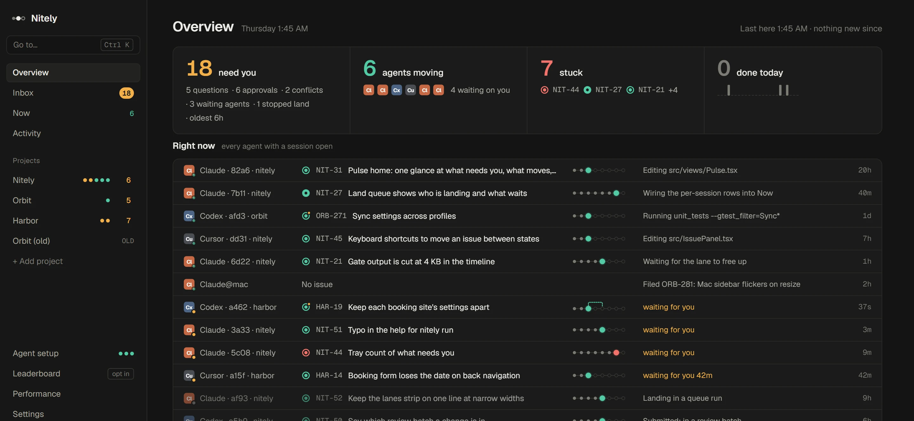
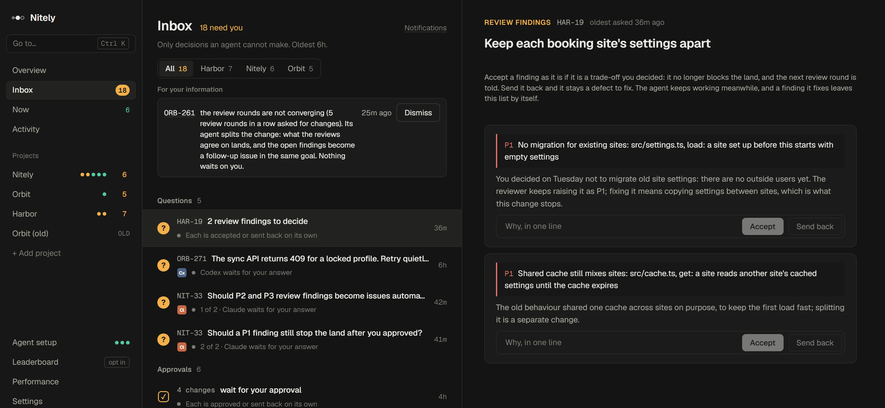

For Claude Code, Codex and Cursor
One person.
A team of coding agents.
Nitely gives your agents one backlog to take work from and one set of rules for branches, tests, reviews and merging. It shows you what each one is doing right now, and only the decisions that are yours reach you.
Free and open source. Windows today, macOS next.
- Todo
- Started
- Working
- Gate
- Review
- Needs you
- Landing
- Done

How a night goes
You set the goal and the rules. The agents do the rest, the same way every time, whichever vendor they come from.
-
You approve a goal
An agent drafts the plan as issues in order. You approve it once. Each issue carries its evidence and the files it will touch, so agents working in parallel stay apart.
-
Agents take the work
Each claims the most urgent issue, so two never start the same one, and works in its own light worktree. Builds run in a few shared warm lanes sized to your machine. Full test suites go to CI.
-
They review each other
Codex reviews Claude's change, Claude reviews Codex's. Serious findings send the work back to its agent, which keeps fixing without waiting on you.
-
One merge at a time
Landing is the only thing that writes your main branch. It rebases, checks the review covers exactly this change, runs the gate once for a batch, and pushes. A bad change is found by bisecting and sent back.
-
You wake to decisions, not noise
A report of what landed per goal, what is at risk, and every place you were needed. The Inbox holds the three questions and two approvals that are actually yours.
Only real decisions reach you
Questions an agent can't answer, changes that touch paths you care about, findings that are a trade-off rather than a bug. Each one comes with what you need to decide it, and keyboard keys to decide fast.
Approving and answering happen only in the app. No command or tool an agent can run does either.

One backlog
Projects with their own issue keys, kinds, priorities, evidence and a full timeline. Agents file what they find, with a duplicate check.
A playbook per repo
Branches, worktrees, the gate, who reviews whom and what waits for you, in one file, run the same way for every agent.
Presets you can read
Fast, Careful or Release. A strip shows exactly what happens to a change before it lands and where each rule comes from.
Fits your machine
Light worktrees, shared build lanes and heavy suites in CI, paced to what your PC can actually do. No special drives or admin rights.
A live view
Overview, Now and Activity show which agent works on what, what it last did and what is stuck, across every project.
Local and private
It runs on your machine. Hooks report tool calls, commands and paths, never your prompts or file contents.
Connects in one step to
- ClClaude Code
- CxCodex
- CuCursor
Built with itself
Nitely's own repo runs on Nitely: its issues, reviews and every merge go through the backlog, playbook and landing described here. The code is open under Apache-2.0.
The installer isn't code-signed yet, so Windows asks once before it runs. The README shows how to verify a download.